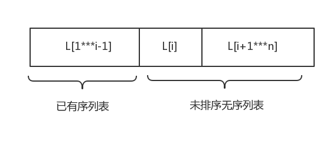

内部排序介绍
算法的稳定性：如果待排序中有两个元素$R_i$、$R_j$，并且它们相等。且在排序前$R_i$在$R_j$前面。如果使用某种排序算法后$R_i$仍在$R_j$前面，则称这种算法是稳定的，否则就是不稳定的。
排序算法一般考虑两种操作：比较 移动
插入排序
直接插入排序
如图所示

每次从无序表中取出第一个元素，可以看作是每次将两个有序表合并，即$L[1{\cdots}i-1]$和L[i] (即将单个元素当作有序表)将其使用插入法合并，最终只有一个有序表则为所得结果。
关键代码
1 | void InsertSort(int A[], int n) { |
分析
最好情况下，表中元素已经有序，只需要一次比较无需移动，时间复杂度为$O(n)$
最坏情况下,表中元素与所得结果为逆序，总得比较次数为$\sum_{i=2}^n{i}$，总的移动次数为$\sum_{i=2}^n{(i+1)}$.
平均情况下移动次数与比较次数均为${n^2}/4$。因此直接插入排序的时间复杂度为$O(n^2)$，空间复杂度为$O(1)$。
直接插入排序为稳定的排序算法。
比较与移动都取决于待排序表的初始状态。
折半插入排序
折半插入排序是在直接插入排序的基础上进行了改进。
在查找操作中使用了折半查找的思想，但是移动没有改进。
关键代码
1 | void BinaryInsertSort(int A[], int n) { |
分析
折半查找的时间复杂度为$O(nlog_2n)$折半插入排序的时间复杂度为$O(n^2)$，空间复杂度为$O(1)$。
折半插入排序为稳定的排序算法。
移动取决于待排序表的初始状态，而比较的次数与初始状态无关。
希尔排序
希尔排序也叫缩小增量排序，它的思想就是将待排序序列按照相等间隔抽象出来一个子表，将子表进行插入排序，当间隔缩小为1时，则全体均有序了。
关键代码
1 | void shellSort(int A[], int n) { |
分析
希尔排序的空间复杂度为$O(1)$，最坏情况下时间复杂度为$O(n^2)$。
希尔排序是不稳定的排序算法。
希尔排序仅适用于顺序存储的线性表。
交换排序
冒泡排序
冒泡排序的基本思想是从后向前两两相邻元素进行比较，若它们逆序则交换它们，直至整个列表有序。
冒泡排序每次循环最少会使一个元素(最小元素)归位，这样最多仅需要进行n-1趟冒泡就可以将所有元素排序。
关键代码
1 | void BubbleSort(int A[], int n) { |
分析
冒泡排序的空间复杂度为$O(1)$，最好情况下，数列已经有序，比较次数为n-1，交换次数为n。最坏情况下时间复杂度为$O(n^2)$。平均时间复杂度也为$O(n^2)$。
冒泡排序是稳定的排序算法。
冒泡排序移动与比较都依赖于数列的初始状态。
快速排序
快速排序是冒泡排序的改进，采用分治的思想。在待排序的数列中(随机)找到一个基准数pivot，将所有小于它的数放在它的左边，所有大于它的数放在它的右边，那么此时pivot就在它的位置上了(说明已经归位)。重复递归左右两个子表，最终整个数列有序。
冒泡排序每次归位一个最小数，而快速排序每次归位一个基准位。
关键代码
1 | int partition(int A[], int low, int high) { |
分析
快速排序基于递归实现，因此需要借助递归工作栈，空间复杂度最好情况下为$\lceil log_2(n+1) \rceil$，最坏情况下要进行n-1次递归调用，空间复杂度为$O(n)$。平均空间复杂度为$O(log_2n)$，时间复杂度，最好的情况下，partition()函数可以做到平衡划分，即得到左右两个大小相近的子集，在这种情况下时间复杂度为$O(nlog_2n)$。最坏的情况下时间复杂度为$O(n^2)$。平均时间复杂度为$O(nlog_2n)$。
快速排序是不稳定的排序算法。
快速排序移动与比较都依赖于数列的初始状态。
提高快速排序的效率一种方法是当递归得到的子集规模比较小时不再使用快速排序，而使用插入排序等算法。第二种就是在选取基准元素的时候，随机选取三个不同元素然后选取它们中间的那个作为基准元素，这样几乎不会发生最坏情况。
快速排序是所有内部排序算法中平均性能最优的算法。
选择排序
堆排序
堆排序是树形选择算法。
大根堆：双亲结点大于孩子结点。
小根堆：双亲结点小于孩子结点。
堆排序基于完全二叉树。已知数组$L[1{\cdots}n]$我们知道完全二叉树的性质有，对于结点L[i]它的孩子结点分别为$L[2i]$和$L[2i+1]$,且这颗树中共有n/2棵子树。因此一个n个结点的堆中也有n/2个子堆。对于大根堆，堆的第一个值一定是最大值，因此不断的拿走第一个值再重新建堆即得到堆排序的序列了。
关键代码
1 | void adjust(int A[], int k, int len) { |
分析
堆排序的空间复杂度为$O(1)$，每次建堆的时间复杂度为$O(n)$，每次调整的时间复杂度为$O(h)$，h为堆的深度。因此在最好、最坏和平均的情况下堆排序的时间复杂度为$O(nlog_2n)$
堆排序是不稳定的排序算法
堆排序的建堆和调整都不依赖于数列的初始状态。
归并排序
归并排序是建立于合并的思想。将n个元素分成各包含n/2个元素的子表，再采用归并算法对两两子表递归合并。最终有序。
关键代码
1 | int B[100]; //辅助数组 |
merge()函数中最后两个while只有一个会执行
分析
归并排序需要借助n个辅助空间，因此空间复杂度为$O(n)$，每一次归并的时间复杂度为$O(n)$，共需进行$\lceil log_2n \rceil$次，所以总的时间复杂度为$O(nlog_2n)$。
归并排序是稳定的排序算法
归并排序查找和移动都不依赖于数列的初始状态。
对于N个元素的k-路归并排序，排序趟数m满足$k^m=N$，因此$m=log_kN$。因此m的值为$\lceil log_kN \rceil$。
基数排序
基数排序不基于关键字的比较，而是按照关键字各个位上的数的大小进行排序。借助n个队列完成分配操作。然后将n个队列链接，完成收集操作。
分析
基数排序所需r个辅助队列，因此空间复杂度为$O®$。时间复杂度，一趟分配需要$O(n)$，一趟收集需要$O®$。共需要d趟(d为最大关键字的位数)。因此总的时间复杂度为$O(d(n+r))$
基数排序的分配与收集操作与数列的初始状态无关。
基数排序也是稳定的排序算法。